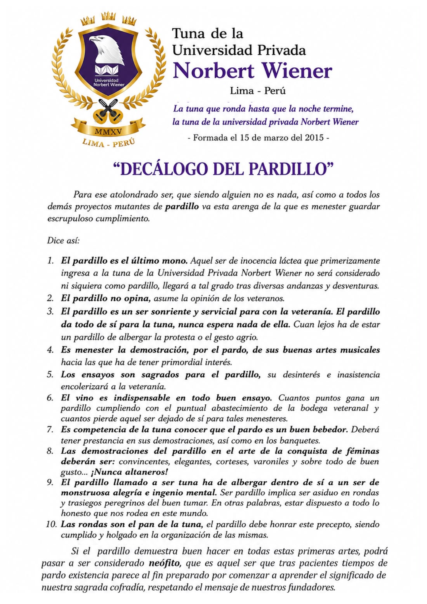

¡la tuna que ronda hasta que la noche termine!
Bienvenido al portal oficial de aprendizaje, tradición y archivo musical de la Tuna de la Universidad privada Norbert Wiener.
Cancionero
Aprende las letras y los acordes oficiales de nuestro repertorio.
Decálogo
Conoce e imprime el decálogo de la hermandad.
Real Orden de Ascenso
Descubre los requisitos desde Aspirante hasta Tuno de Beca.
Minijuegos
Pon a prueba tus conocimientos sobre la Tuna jugando.
Cancionero & Transcripciones
Busca cualquier canción y despliega los acordes para guitarra, laúd o bandurria.
Clavelitos vals 3/4
La emblemática canción conocida popularmente como «Clavelitos» nació en 1949 bajo el título original de «Dame un clavel», con música compuesta por Genaro Monreal y letra de Federico Galindo, quien la escribió como un sincero gesto de amor para su entonces novia y posterior esposa. Su primera grabación en disco de vinilo tuvo lugar en 1958 a cargo de la Estudiantina de Madrid, figurando aún con su nombre original en la carátula[cite: 1].
En cuanto a su género y estructura, la obra fue concebida dentro del ámbito de las estudiantinas españolas con un carácter de vals / pasacalle. Está construida sobre un alegre compás de 3/4 que se percibe con un balance fluido y elegante («¡UN! - dos - tres»), lo que la convierte en un pasacalle ideal: un ritmo pensado para cantar mientras se camina por las calles y perfecto para ofrecer serenatas bajo los balcones[cite: 1].
Tutoriales en Video
Aprende punteos, ritmos y ejecución de instrumentos paso a paso.
Puntero de Bandurria - Clavelitos
Rasgueo de Pasodoble en Guitarra
Decálogo de la Tuna
Visualiza el documento oficial o descárgalo en alta resolución.

{kind=link}
Real Orden de Ascenso
Las etapas tradicionales para conseguir la preciada Beca Morada.
Aspirante
- Aprender de memoria el Decálogo.
- Conocer las canciones emblemáticas de la Tuna.
- Asistir con puntualidad a ensayos e integraciones.
Pardillo / Novato
- Aprender la ejecución de instrumento, pandereta o capa.
- Demostrar caballerosidad, gallardía y respeto a la tradición.
- Aprobar los exámenes prácticos ante el Consejo de Becas.
Tuno de Beca
- Aprobación por votación unánime del Consejo de Beca.
- Aportar activamente al prestigio y crecimiento del grupo.
- Imposición oficial de la Beca Morada.
Minijuegos Tradicionales
¿Qué tanto sabes de la Tuna? Ponte a prueba.